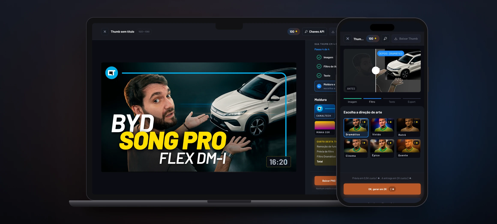
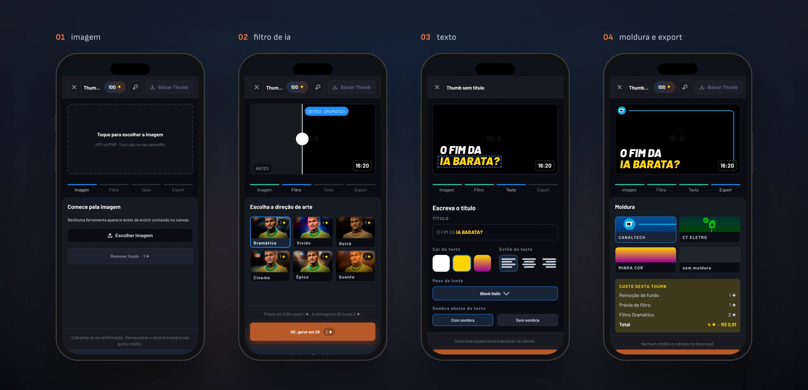
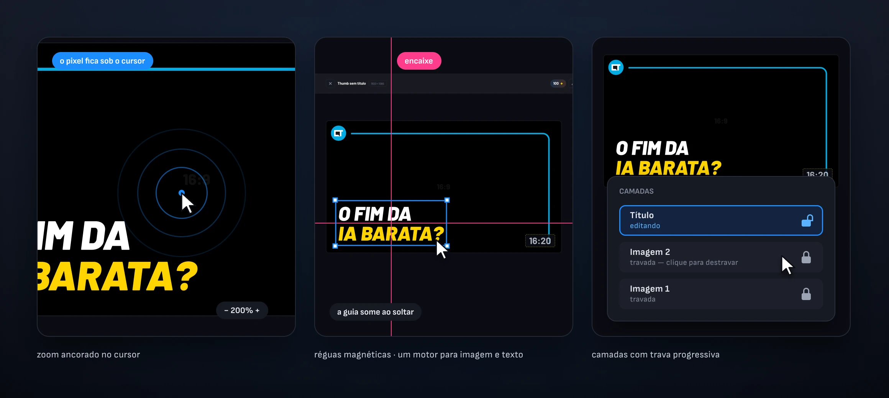
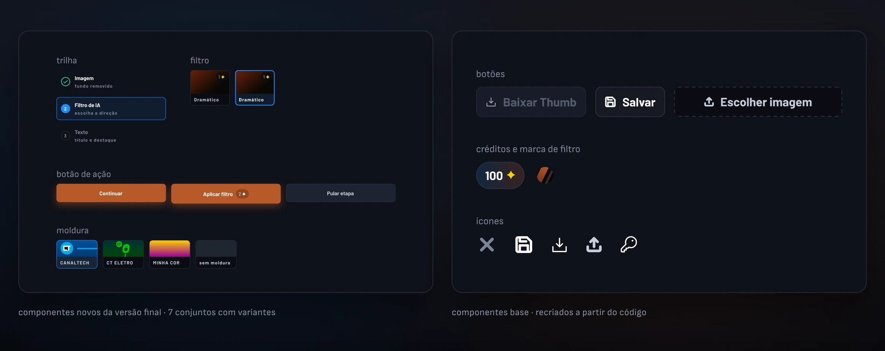
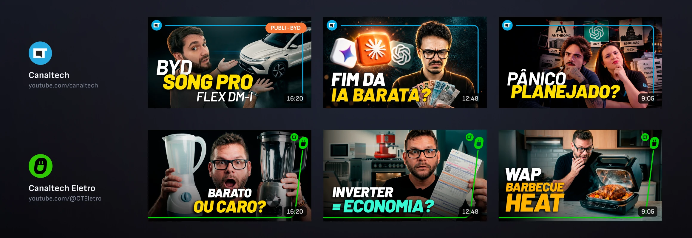

REAL PROJECT · INTERNAL PRODUCT IN USE AT CANALTECH
An on-brand thumbnail, made by someone who
isn’t a designer.

Canaltech publishes video every day, and every thumbnail went through the design team. ThumbDrop is an internal editor that puts the house style in the hands of whoever produces the content, with no need for Photoshop. Two versions: the first proved the workflow existed; the second became the tool in use today.
About the numbers.
In one recorded production, a published thumbnail was ready in three minutes. The old workflow took an average of 30 minutes in Photoshop. Filters and cutouts were tested against the real Gemini and PhotoRoom APIs. The API cost is in section 06.
CLIENT
Canaltech
internal thumbnail tool
ROLE
Product design, UX
and design engineer
DELIVERABLES
Research · 2 versions
design system · product in use
MADE WITH
Claude Design · Claude Code ⇄ Figma via MCP
Gemini and PhotoRoom APIs
PERIOD
2026 · solo
2 versions, 6 people per round
01 · THE PROBLEM
The thumbnail couldn’t wait for the designer.
The thumbnail decides the click, and the channel publishes every day. When only design knows how to make an on-brand one, every video joins a queue.
30 min
historical average for one thumbnail in the old workflow, in Photoshop
1
design team handling every thumbnail on the channel
3
tools for one thumbnail in V1 without APIs: editor, PhotoRoom site and Gemini site
0
Photoshop knowledge required — the project’s criterion
02 · FROM THE FIRST VERSION TO THE TOOL IN USE
Two versions, two different questions.
The first version answered "does this work?". The second, "can someone who isn’t a designer use it?". The videos are two different productions, start to finish — not a controlled test.
A · V1 · MADE IN CLAUDE DESIGN
First the flow. Then AI inside it.
The first version was born in Claude Design, without going through Figma, and was validated in two stages. In the first, no API at all: the cutout was done on the PhotoRoom site and the filter on the Gemini site. Once the flow proved it worked, both APIs went into the editor, still in Claude Design — and it worked again, now without leaving the tool.
What it didn’t solve was the experience. The interface that came out of Claude Design looked like generic AI and required someone who already knew how to operate a design tool. I tested it with the team and heard what got stuck, what worked and what was missing for non-designers — and that’s what the final version redesigned.
B · FINAL VERSION · PAPER → FIGMA ⇄ CODE VIA MCP
Back and forth between design and code.
With those answers, I went back to paper and hand-drew the experience I wanted. Claude Code built the wireframe from that reference, and through MCP it went into Figma, where I did the design work: I evolved each version up to the final prototype, designed for non-designers.
From Figma, the prototype went back through MCP to Claude Code, which programmed the tool to use the APIs — with no keys inside the code. The handoff supported checking in both directions: it isn’t automatic syncing, it’s an assisted process of analysis, adaptation and review.
The first version, with the cutout and filter done outside the tool.
The final version, with cutout and filter inside the editor. Three minutes, thumbnail published on the channel.
WHAT THE SECOND VERSION SOLVED
A guided flow in 4 stops
V1 showed everything at once.
The final one only reveals each tool once there’s content for it to work on.
The cost shows up before the call
The filter and the cutout ask for their own confirmation and show the cost before running: 1 ✦ for the cutout, 1 for the preview and 2 for the final. Exporting is free.
Going back doesn’t cost your edits
Stops you’ve visited can be resumed, and reframing, moving or redoing the text is local and doesn’t spend credit. An unapproved AI preview is discarded when you leave the step, and the composition lives only in the tab’s memory.
03 · THE DECISIONS BEHIND THE FLOW
Four stops, and a consistent color rule.
The editor isn’t one screen with every tool. It’s a path: each stop only shows what makes sense at that point.
01
Image. No image, no thumbnail: no tool appears before there’s content.
02
AI filter. Six art directions, each card with your own photo already filtered and the price written on it. Going on without a filter costs nothing.
03
Text. Title, highlight, weight and alignment, with direct manipulation on the canvas.
04
Frame and export. Four options — Canaltech, CT Eletro, My color and No frame — and the PNG at 1920 × 1080. The receipt shows the cost before the download, which doesn’t charge credit.
05
The color rule. One orange per screen, on the action that moves forward; blue marks where you are; green confirms what already happened; red only for failure.

Credit is only charged when the AI runs.
Reframing, moving, changing the text color and redoing the frame are local operations and don’t use credit. If a generation fails, the editor balance is restored and the composition stays intact. Canceling stops the wait, but the preview has already been charged — and the screen says so beforehand.
04 · CRAFT
What makes it feel like a real editor.
Three things nobody praises when they’re right, and that give the product away when they’re wrong.

01
Zoom anchored to the cursor. The pixel under the cursor stays under the cursor — you only notice when it’s missing.
02
Magnetic guides. A single snapping engine for image and text. The guide appears during the gesture and disappears on release.
03
Layers with progressive locking. Each new image locks the previous ones; the layer you want can be selected from the list to edit it again.
The project’s most expensive decision: compact instead of scroll.
Letting the panel scroll was the easy way out — and in a 320px panel that hides half the tools. The main states were compacted to fit 1440 × 900 and 390 × 844, with no horizontal overflow from 360 to 1440 px in Chromium. With additional content, the panel scrolls vertically.
05 · THE SYSTEM
A 49-variable system in Figma, guiding the code.
Figma guided the implementation, and CSS variables organized the foundation. The CTA uses its own orange, #B85829: white on the brand orange gives 2.73:1 and fails AA.
49
variables in Figma, in 5 collections, all with defined scopes
9
text styles, with size bound to a variable
7
component sets with variants, plus 13 standalone components
2
modes, desktop and mobile, in the typography and layout collections
Desktop and mobile share the same foundation.
Desktop and mobile use the same visual foundation and the same components, with responsive adjustments for each width. In Figma, the typography and layout collections have Desktop and Mobile modes.

06 · WHERE IT IS TODAY
In use, with the cost covered by credits.
The six published thumbnails were made by me. Marketing, sales and video are validating the tool on experimental pieces, for channels and projects that haven’t aired yet. Photoshop remains design’s main tool.
6
published thumbnails, all made by me — 3 on Canaltech and 3 on Canaltech Eletro
3 min
in one recorded production, versus the historical average of 30 min in Photoshop
R$ 0
in incremental AI filter cost today, covered by available Google credits — the economic cost exists
2
channels with published thumbnails: Canaltech and Canaltech Eletro
Canaltech
Canaltech’s tech channel on YouTube. Thumbnails made in ThumbDrop are among the published videos.
youtube.com/canaltech ↗
Canaltech Eletro
Canaltech’s home appliances channel. The pieces are in the feed, alongside the others.
youtube.com/@CTEletro ↗
ONE OF THEM IS SPONSORED
The BYD thumbnail ran on a sponsored video.
The BYD | Song Pro Flex DM-i was published as sponsored content on Canaltech — it’s the thumbnail from the section 02 video. In sponsored content the finish standard is the advertiser’s, which makes this the most demanding piece on the list.

About the cost, honestly.
Each AI filter goes through Google’s API (Gemini); each cutout, through PhotoRoom’s — both tested with real calls. The keys aren’t in the code: whoever opens ThumbDrop enters the Gemini and PhotoRoom keys on the first screen, and they stay only in the browser — which is why the project can be published without exposing any credentials. Today the incremental filter cost is covered by credits Grupo Magalu provided for internal validation. The economic cost exists and comes back if the credits run out or volume grows. The balance in the bar is a local spending cap the user adjusts themselves — not the provider account balance.
07 · OPEN ISSUES
What I didn’t solve.
The product being in use makes these open issues more visible, not less. They’re the four I’d raise first if someone took over the tool tomorrow.
Keeping the credits isn’t my decision
The Google credits came from Grupo Magalu for internal validation; keeping them is a commercial decision. Without them, a thumbnail costs ≈ R$ 0.91 with one filter attempt and R$ 1.41 with three — at the script’s reference prices.
I didn’t measure the discard rate
How many filters are applied and rejected before the OK? That number gives the real cost per usable thumbnail — and, with the credits running, it can be collected without paying to find out.
Six thumbnails don’t measure impact yet
The six published thumbnails were made by me, and use by other teams is still experimental. Measuring how much of the old workflow the tool replaces depends on volume made by other people.
No performance data
No CTR or views attributed to the thumbnails made here. A video’s result depends on topic, title and algorithm; isolating the thumbnail’s effect needs a test I haven’t set up yet.
08 · MORE
Other projects
Nega Nagô
A braider’s catalog became booking without leaving WhatsApp. Research, design system and front-end — live at neganago.com, with availability coming straight from her calendar.
CT em Campo · Canaltech × Netshoes
A World Cup activation that didn’t fit the portal template. A dedicated surface, brandbook, motion and code — with no ads, recommendations or competitors sharing the screen.
Available for work
I design, I write the code, and I tell you what didn’t work.
Thirteen years in design, five of them at Canaltech across design systems, marketing and sales. If you have a surface that needs to ship finished and measured, not just specified, get in touch.
© 2026 Erick Teixeira
oerickteixeira@gmail.com · São Paulo